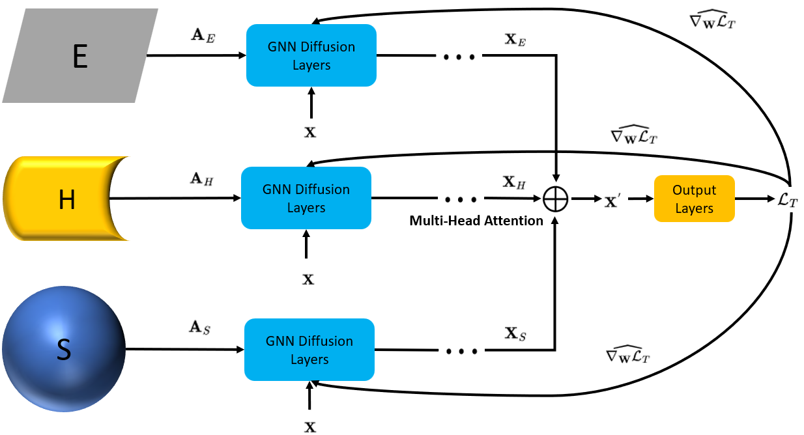

|
Yuan Lu I'm an incoming PhD student at the Halıcıoğlu Data Science Institute, UC San Diego and I will be supervised by Prof. Yusu Wang. Prior to my PhD, I earned my Master's degree in Machine Learning at the University of Cambridge, where I was supervised by Prof. Pietro Liò. I obtained my undergraduate degree in Statisical Science at UCL, advised by Dr. François-Xavier Briol. |

|
ResearchMy current research interests include geometric & topological deep learning, graph neural networks, deep generative modelling, and their applications in computational biology (such as drug discovery and biological foundation models for DNA, RNA, and proteins). In the past, I also did research on Bayesian nonparametrics, focusing specifically on Gaussian processes and Bayesian optimization. |
|

|
AMES: A Differentiable Embedding Space Selection Framework for Latent Graph Inference
Yuan Lu, Haitz Sáez de Ocáriz Borde, Pietro Liò NeurIPS Workshop on Symmetry and Geometry in Neural Representations, 2023 arxiv We developed a differentiable framework for quantifying and selecting latent geometric spaces for graph inference. |
|
|
Robust Wind Farm Layout via Bayesian Optimization
Yuan Lu Bachelor's Thesis, 2022 We applied Robust Bayesian optimization algorithms to offshore wind farm layout modelling. |
Education |
|
|
|
University of California San Diego
Sep 2024 - Now PhD in Data Science (Machine Learning) Supervisor: Prof. Yusu Wang |
|
|
University of Cambridge
Oct 2022 - Sep 2023 MPhil in Machine Learning and Machine Intelligence Supervisor: Prof. Pietro Liò Mentor: Haitz Sáez de Ocáriz Borde |

|
University College London
Sep 2019 - June 2022 BSc (Hons) in Statistics Supervisor: Dr. François-Xavier Briol |
Awards
|
Misc
I am a big fan of Gundam, especially Zeta Gundam.
|
|
Template source code from Jon Barron. |